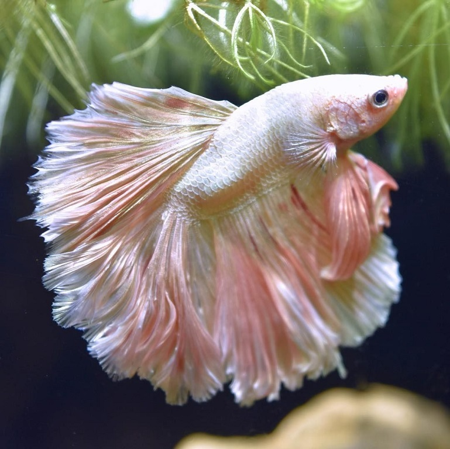
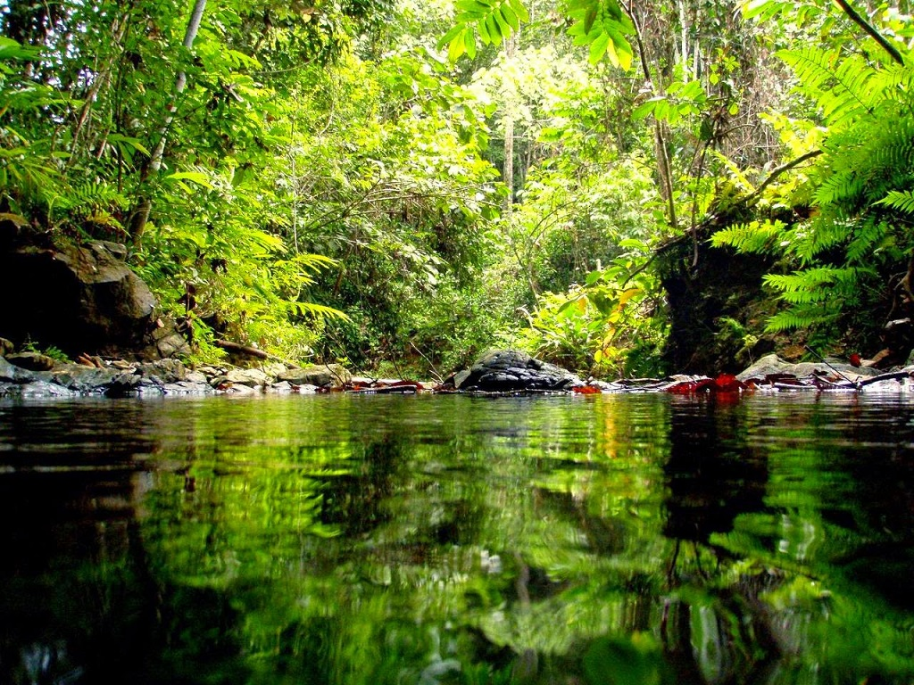

Taistelukala eli betta splendens on makean veden kala jota esiintyy monissa Aasian maissa. Se on suosittu akvaariokala länsimaissa. Taistelukalat elävät yleensä noin kolme vuotta ja syövät pieniä vesieliöitä. Taistelukalat ovat tunnettuja hienosta värityksestään, jota esiintyy vain urostaistelukaloilla. Urostaistelukalat taistelevat keskenään jos ne pistetään samaan akvaarioon, tästä syystä uroksia kannattaa olla vain yksi kerrallaan. Taistelukalat ovat kehittyneet matalassa vedessä eläviksi, niillä on kiduksien lisäksi kyky hengittää ilmaa. Ne haukkaavat usein lisähappea pinnalta. Tämä kyky luultavasti kehittyi siksi, että taistelukalat voisivat selvitä kuivalle maalle joutumisen, ja voisivat jopa siirtyä lammikoiden kautta vesialueesta toiseen.
Njapen näköinen taistelukala
Vuosia sitten oli lemmikkitaistelukala Njappe. Njappe oli vihainen urostaistelukala joka oli hyvin tietoinen reviiristään. Njapen lempipuuhia oli kuplapesän tekeminen, syöminen ja muiden kalojen jahtaaminen. Njappe tykkäsi myös oleilla ja kurkistaa akvaarion pohjalla olevasta luolasta. Njapen mieliruokaa oli maksalaatikko, jota se mutusti päivät pitkät. Kun muut kalat yrittivät syödä sitä, Njappe hätisti ne pois että saisi kaikki muruset syötyä. Muita kaloja täytyi usein ruokkia niin, että antoi njapelle yhteen kulmaan paljon ruokaa ja toiseen kulmaan muille kaloille, jotka jakoivat ruuan nätisti. Njappea pystyi myös välillä silittämään kun se tuli syömään. Se viihtyi muutenkin akvaarion pinnassa.
Njappe eli melkein viisi vuotta, eli todella pitkään taistelukalaksi. Hyvä ruokavalio ja akvaarion kuninkaana eläminen varmasti pidensi sen ikää.
Taistelukaloja
Taistelukalat asuvat tämäntyyppisissä vesistöissä
Osa sivuston tiedosta on fiktiivistä. Njappe oli oikea taistelukala. In case of copyright infringement, contact me via email.